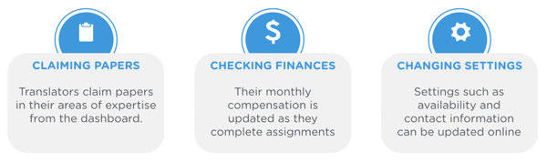
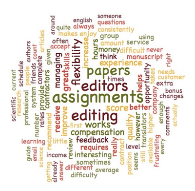
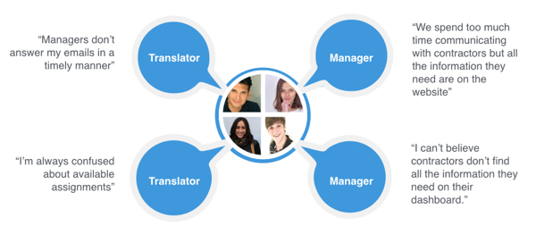
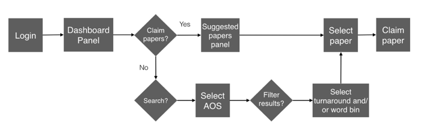
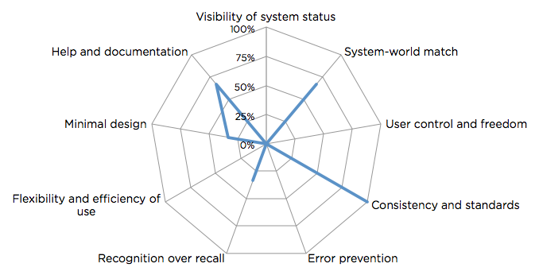
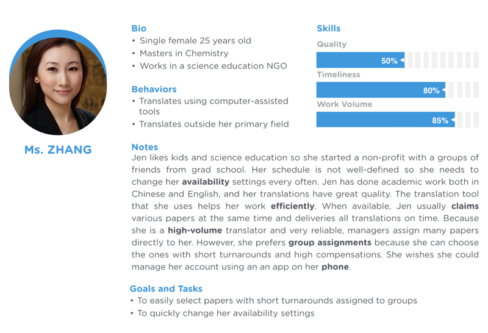
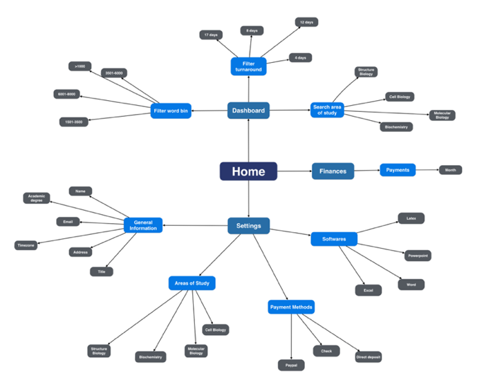
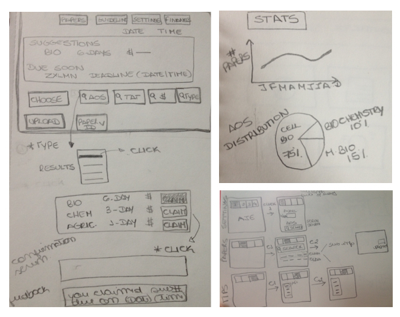

Process
Step #1: Identifying tasks performed online
I met with two primary project stakeholders (project managers and operations managers), and we identified the main tasks performed by contractors on the online platform.
Step #2: Analyzing user surveys
Next, I analyzed past satisfaction surveys using Aabel statistical analysis software. In preliminary analysis, I used NVivo to produce a word cloud based on the contractor's survey responses.The word, assignment, was frequently used in the surveys. After generating a word tree for 'assignment', results showed contractors experienced problems finding and claiming papers on the website.
Step #3: Interviewing users
I conducted remote interviews with 12 users (contractors and managers). These interviews revealed that the main source of frustration was that contractors were note able to complete tasks on their own.
Step #4: Understanding how users complete tasks
I investigated the process that experienced contractors used to find assignments. This user flow shows the steps taken, helping us to identify where problems occcured and to understand the user needs better.
Step #5: Assessing current platform
I evaluated the website using Jakob Nielsen's usability heuristics. This assessment identified several areas where usability principles were violated. The radar plot shows the heuristic data of the assignment page.
Step #6: Creating personas
Based on user interviews and all the data collected, I created 3 personas. Ms Zhang is the primary persona for this project.
Step #7: Reorganizing task steps
Sitemap showing the reorganization of the content of all dashboard pages. Different sections indicate different tasks performed on the site.
Step #8: Sketching new pages
Sketching was an important part of the design process. Here I show some sketches of the main page of the website.
Step #9: Creating prototypes
When I had enough feedback from project managers and developers on the ideas sketched, I designed a higher fidelity prototype in OmniGraffle. Next, I conducted remote usability testing sessions with contractors, made further changes, and arrived at the final prototype